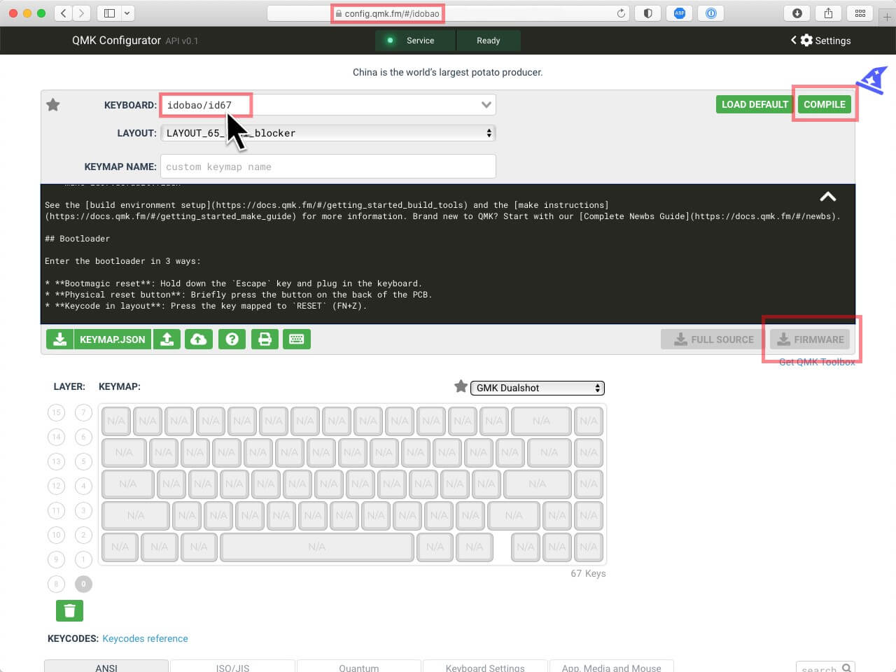

You can get your firmware from 4 different sources:
- Download from our Firmware pages.
- Compile from the QMK source code.
- Use the QMK Configurator.
Download from caniusevia.com.
VIA is seldom maintained - the firmware at this site may not be the latest build of the firmware and we recommend not to use this resource.